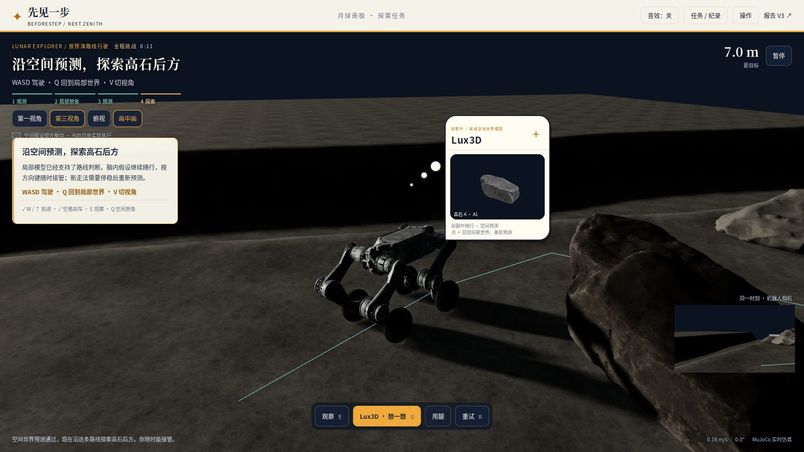
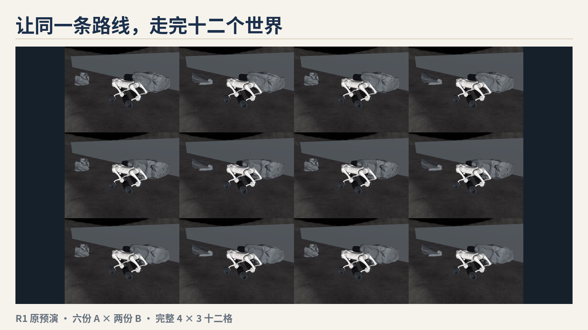

AHOLO / NEXT ZENITH
Imagine local space.
Then choose the next step.
BeforeStep uses Aholo Lux3D to turn ordinary robot photographs into multiple object geometry hypotheses. It aligns and checks them against observations, places admitted shapes in a local environment, and uses MuJoCo to rehearse routes before assisted execution. The generated shape and footprint actually affect planning and collision geometry.
Your judgment starts the task
Drive toward a naturally occluded rock gap. After recording your first judgment, choose manual driving, Lux3D imagination, another observation, or stopping. Manual control is available independently. Assisted routes require a complete physical rehearsal from the current stopped pose, tied to the selected worlds, route and observation version.
The current demo compares two hypotheses from the same original RGB input with a fixed second rock, producing two rehearsal worlds. Drive past the rocks, then trigger all twelve principal wheel-leg actions yourself. Desktop uses WASD or arrow keys, Space to brake, Q to imagine, E to observe, V to change camera, and 1–4 plus J/K/L for leg actions. Touch controls provide a joystick and matching buttons.

Original evidence remains inspectable
| R1 strategy | Looks | Original result |
|---|---|---|
| Optimistic: follow visible geometry | 1 | Collision at 80.87 simulation seconds |
| Conservative: block unknown space | 5 | Stopped at 142.20 simulation seconds |
| Lux3D hypotheses and full rehearsal | 1 | Arrived at 112.84 simulation seconds |
The original R1 research used six A candidates and two B candidates: twelve worlds, all rehearsed before independent execution. The later R2/R3 collisions and post-result stops remain available. Hypotheses can underestimate an unseen backside or miss an unobserved object; passing observation checks and rehearsals is conditional evidence.

Current delivery
The main project report is V5. The author has published the primary Bilibili video. The fixed native-footage release contains the continuous 1080p master, clear model/map comparison, a stop branch, five figures and an editor manifest. These are source materials for the director's 112-second final film.
Public desktop and 390px touch emulation completed two worlds, twelve player actions and arrival. Native phone performance has not been measured. Original videos passed full decoding and package checks; four small files passed complete anonymous download checks, while complete anonymous GET verification of the two large files remains incomplete.
Method and version identity
Lux3D takes ordinary RGB images and proposes static object shapes. Local RGB-D, pose and terrain support alignment and checking; MuJoCo calculates movement and contact. The current web demo reuses actual retained inputs and models rather than submitting current game frames. M20 is the visual shell; frozen Go2W dynamics and controls remain the simulation foundation. Original research, game scores and video durations are recorded separately.
Over 400 actual generation tasks are retained. V6, V7, V8, v0.1, v0.2 and v0.3 preserve source, inputs, generated assets, failures and results. Report V5 and historical technical release v0.3.0 have separate version numbers.
Current delivery and sources · Code tour and local reproduction · Archived detailed research account · Credits and licenses